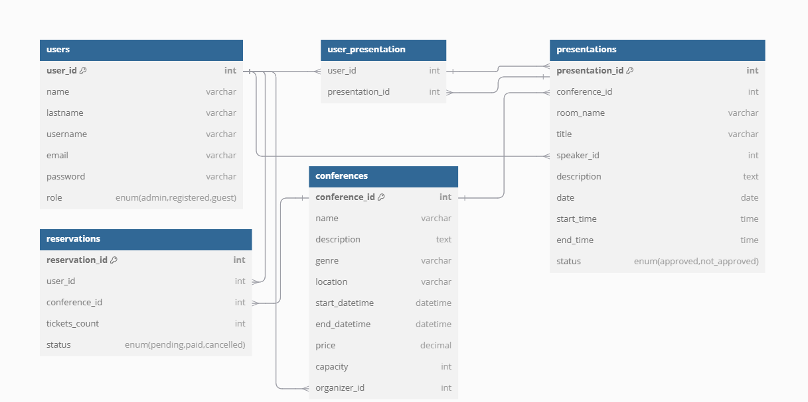

Konference
- Autoři
- Jakub Hrdlička
xhrdli18@stud.fit.vutbr.cz -
rozvrh uzívateľa, prihlásenie, registácia, nezaplatené rezervácie z pohľadu usporiadateľa konferencie
- Jan Furik
xfurik00@stud.fit.vutbr.cz -
výpis konferencií, prezentácie, návrhy prezentácií, schvaľovanie prezentácií
- Rebeka Tydorová
xtydor01@stud.fit.vutbr.cz -
vytvorenie novej konferencie, rezervácie užívateľov, rezervácia lístkov
- URL aplikace
- http://www.stud.fit.vutbr.cz/~xfurik00/IIS
Uživatelé systému pro testování
Uveďte prosím existující zástupce všech rolí uživatelů.
| Login | Heslo | Role |
|---|
| admin | admin | Administrátor |
| prodavac | prodavac | Prodavač |
| franta | franta | Zákazník |
Video
Přiložte odkaz na komentované video demostrující použití informačního systému. Zaměřte se na případy užití definované zadáním (např. registrace uživatele, správa uživatelů a činnosti jednotlivých rolí). Video nahrajte například na VUT Google Drive, kde ho bude možné přímo spustit z odkazu.
Implementace
administrátor:
- update_role.php, delete_user.php - správa užívateľov
registrovaný užívateľ:
- create_conference.php - vytvorenie konferencie
zakladateľ konferencie:
- update_presentation_status.php - schválenie/odobratie prezentácie
- update_presentation.php - priradenie miestnosti a času prezentácii
- confirm_payment.php - potvrdenie platby za rezervované lístky
- remove_from_reservations.php - odstránenie rezervovaných lístkov
- create_presentation.php - vytvorenie návrhu na prezentáciu
prednášajúci na konferencii:
- get_user_schedule.php - načítanie prezenácií užívateľa
- create_reservation.php - vytvorenie rezervácie na konferenciu
návštevník konferenice:
- get_user_reservations.php - načítanie rezervácií užívateľa
- update_ticket_count.php, remove_from_reservations.php, pay_for_reservation.php - správa rezervácií z pohľadu návševníka konferencie
- conference_details.php - načítanie detailov o konferencii spolu s prednáškami
- check_schedule.php - pridanie prednášky do osobného rozvrhu
neregistrovaný užívateľ:
- get_conferences.php - načítanie konferencií
- conference_details.php - načítava detaily o konferencii, ktoré zajŕňajú aj stav kapacity
- reserve_tickets.php - vytvorenie rezervácie na konferenciu
Databáze

Instalace
Systémové požiadavky:
- pre správne fungovanie nášho projektu je potrebné mať nainštalované PHP verzia 8.1.30.
- pre databázový systém sa využíva MySQL
- projekt bol testovaný v prehliadači Google Chrome
Konfigurácia databázy:
- po stiahnutí archívu treba obsah rozbaliť do požadovanéj zložky na serveri
- vytvorte databázu na serveri
- vytvorte užívateľa a nastavte pripojovacie údaje v súbore db_config.php
- inicializujte databázu pomocou skriptu my.sql
Známé problémy
Zde popište, které body zadání nejsou implementovány a z jakého důvodu. Např. „Z časových důvodů nebyla implementována správa uživatelů.” Pomůžete tím zrychlit hodnocení, když neimplementované funkce nebudeme muset dlouze hledat.